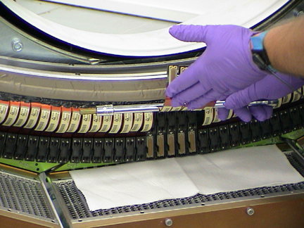
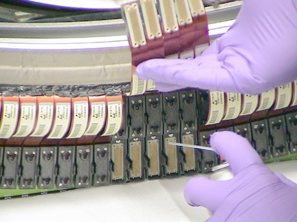

Position the DAS at 6 O’clock.
Carefully bend the flex leads out of the way. A ratchet extension works well to prevent creasing of the flex. See Illustration 3.
Use lint free cloth to absorb excess AMAX and protect DAS Chassis. See Illustration 3.
Support flexes with one hand and spray AMAX with the other. See Illustration 4.
Allow Amax to fully dry before assembly.
Illustration 3: DDIF Flex Handling

Illustration 4: DDIF Cleaning with AMAX
